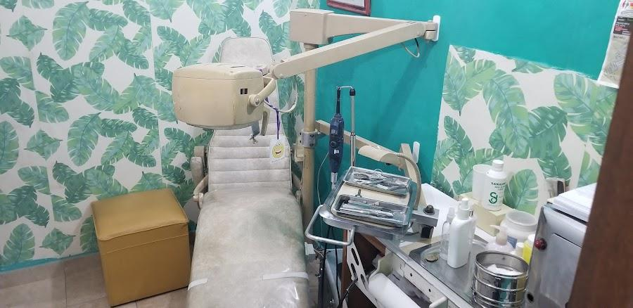
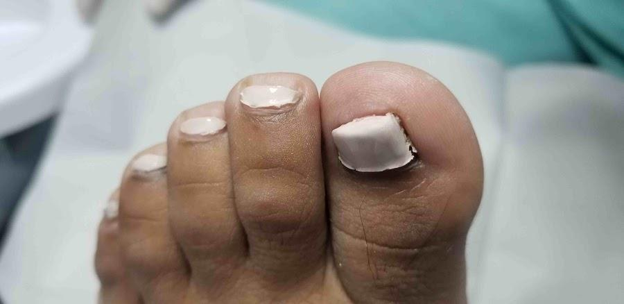
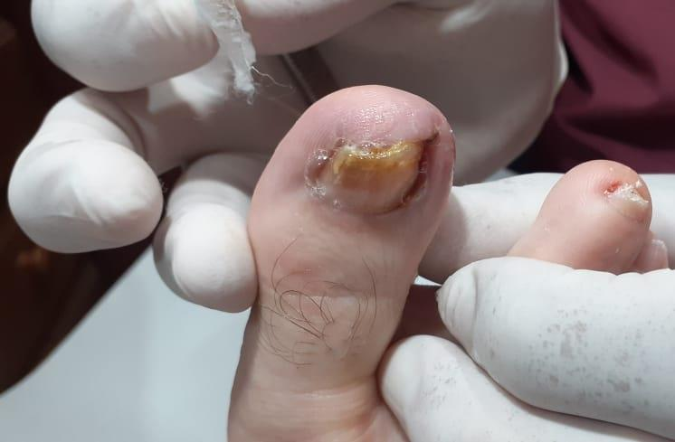
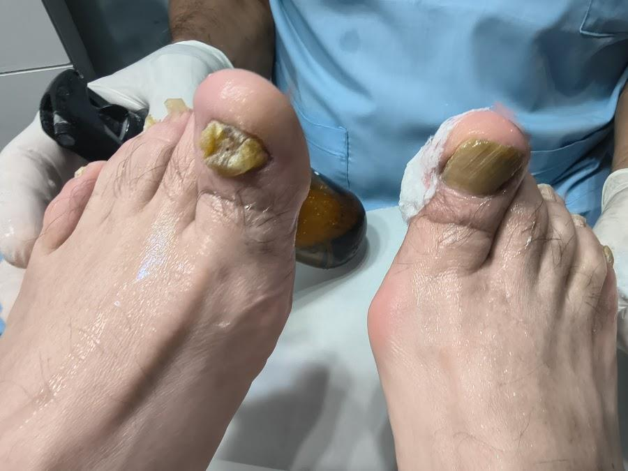
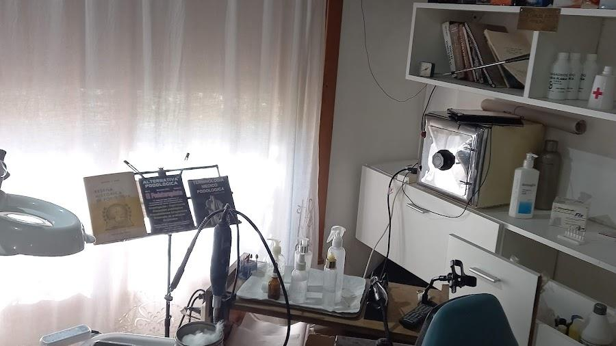

Uña encarnada
Dolor, enrojecimiento o hinchazón en el borde de la uña, sobre todo al usar calzado cerrado. Mientras antes se consulte, más simple es de tratar.
Consultar por estoPodología · Belén de Escobar
Contanos qué sentís o qué viste en tu pie y coordinamos tu turno en el consultorio de Don Bosco 804.

Elegí lo que te pasa
Dolor, enrojecimiento o hinchazón en el borde de la uña, sobre todo al usar calzado cerrado. Mientras antes se consulte, más simple es de tratar.
Consultar por estoUñas amarillentas, gruesas o quebradizas. Se revisa el estado de la uña y se te indica cómo seguir.
Consultar por estoZonas duras o con dolor al apoyar el pie. Se evalúa qué las provoca y cómo aliviarlas.
Consultar por estoSi tenés diabetes, el cuidado de los pies requiere controles periódicos. Consultá antes de que aparezca una herida o una molestia.
Consultar por estoSi no te duele nada pero querés que revisen tus pies y tus uñas, también podés pedir turno.
Consultar por estoCasos que se atienden en el consultorio



Los textos de esta sección son orientativos; en la versión oficial se ajustan a lo que ofrece el consultorio.
Para pedir turno
Contás qué te molesta. Si querés, mandás una foto del pie.
Te pasamos días y horarios disponibles, de lunes a sábado.
Don Bosco 804, esquina Colón, en Belén de Escobar.

El consultorio
Así se ve el consultorio: luminoso, con el instrumental a mano y todo en orden para atenderte.
Consultá por tu turnoCómo llegar y cuándo
Don Bosco 804, esquina Colón
Belén de Escobar, Buenos Aires
Turnos al 11 5404-8128
| Lunes a viernes | 9:00 a 18:00 |
|---|---|
| Sábado | 8:00 a 12:30 |
| Domingo | Cerrado |
Atendemos de lunes a sábado en Don Bosco 804. Mientras antes consultes, antes se resuelve.
Escribir por WhatsAppLos botones de contacto se activan en la versión oficial.